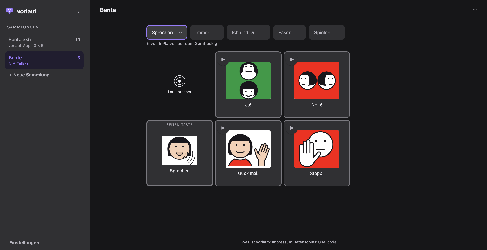

Selbstbau
Der DIY-Talker
Fünf Tasten, die zugleich Displays sind, ein ESP32-S3 dahinter, ein Gehäuse aus dem Drucker. Vier Tasten sprechen eine gespeicherte Aussage, die fünfte schaltet das Set weiter: fünf Sets, zwanzig Aussagen.
Ich baue solche Sachen gern, und das hier ist eins davon. Es läuft, und alles, was zum Nachbauen gehört, liegt offen: Teileliste mit Bezugsquellen, Verdrahtung, das Gehäuse als OpenSCAD-Quelle statt als fertiges STL, die Firmware, und die Seite, die den Inhalt durch das Kabel schiebt.
Wofür
Was es im Alltag leistet
Zwanzig Aussagen, immer an derselben Stelle, ohne Menüs und ohne Wischen. Das Gerät ist klein genug für eine Hand, und außer den fünf Tasten gibt es nichts darauf, was sich verstellen ließe.
Ein Tablet kann mehr, und für die meisten ist es der richtige Weg. Das hier ist für die Fälle daneben: unterwegs, draußen, im Bett, oder wenn ein großer Touchscreen mehr Bedienung ist als Kommunikation.
Teile
Was drinsteckt
- Rechner
- Adafruit ESP32-S3 Feather, 8 MB Flash, kein PSRAM. Er lädt den Akku über USB-C und bringt den passenden JST-PH-Stecker mit, deshalb braucht das Gerät weder eine zweite Ladebuchse noch einen Schalter.
- Tasten
- Fünf Waveshare ScreenKeys, 0,85 Zoll IPS, 128 × 128, ST7735 — und zwar die Ausführung mit Tastenmechanik. Es gibt dasselbe Modul ohne, und dann ist es nur ein Display.
- Ton
- MAX98357A an I²S, dazu ein 40-mm-Lautsprecher mit 4 Ω in einer geschlossenen Kammer im Gehäuse.
- Strom
- LiPo 3,7 V mit 2500 mAh, an JST-PHR-2.
- Gehäuse
- Drei gedruckte Teile — Wanne, Träger, Deckel — und sechs Schrauben. Der Träger hält die fünf ScreenKeys mit nichts als zwanzig Löchern; die Abstandsbolzen bringen die Module selbst mit.
Entscheidungen
Warum es so gebaut ist
- Tasten sind Displays
- Was auf einer Taste steht, ändert sich mit dem Vokabular. Gedruckte Einleger müsste man bei jeder Änderung neu schneiden, und am Anfang ändert sich ständig etwas.
- Kein Ein-Aus-Schalter
- Das Gerät geht von selbst in Deep Sleep und wacht per Tastendruck auf. Das ist auch der Grund, warum die Tasten auf GPIO 0 bis 21 liegen müssen: von anderen Pins weckt der Chip nicht auf.
- Kein Lautstärkeregler
- Die Pegel werden beim Kompilieren normalisiert. Ein Regler wäre ein Bedienelement mehr, das im Alltag verstellt wird und dann leise steht, wenn es darauf ankommt.
- Kein Funk
- Kein WLAN, kein Bluetooth. Der einzige Weg in das Gerät hinein ist das Kabel, und das ist eine Eigenschaft und kein fehlendes Feature.
- Board nicht beliebig
- Ein Board ohne Ladeelektronik braucht ein zusätzliches Lademodul, und die Pinbelegung ist auf dieses zugeschnitten. Tauschen geht, kostet aber einen Nachmittag.
Die Unterlagen im Repository sind auf Englisch.
Toolchain
Wie Inhalte auf das Gerät kommen
Der Editor exportiert eine gerätespezifische Datei: Quellen unbearbeitet,
Negation als Flag, die WAVs, die das Gerät wirklich abspielt. Die
Ladeseite nimmt sie im Browser entgegen, prüft sie, rendert die Kacheln
auf Tastengröße, schreibt die Tabelle layout.bin und schiebt
alles über WebSerial durch das USB-C-Kabel. Für den Alltag braucht es
damit kein Flash-Werkzeug.
Wer lieber auf der Werkbank arbeitet: Dieselbe Seite schreibt den Build
auch in einen Ordner, aus dem sich mit mklittlefs ein Image
bauen lässt. Die Firmware selbst ist ein Arduino-Sketch in C++ und wird
einmal geflasht.

- Browser
- WebSerial gibt es nur in Chrome und Edge. Prüfen und Kompilieren läuft in jedem Browser, nur das Kabel nicht.
- Formatgrenze
- Der Editor schreibt eine Datei und hört da auf; Kompilieren und Senden liegen im Repository des Geräts. Beide Seiten werden gegen dieselben Fixtures geprüft, damit Browser und Firmware sich über die Bytes einig bleiben.
Stand
Was läuft und was offen ist
Durchgelaufen ist die ganze Kette: Vokabular im Editor, Export, Ladeseite, Kabel, gesprochene Aussage auf dem Gerät. Der erste Gehäusedruck hat fünf Dinge gezeigt, die nicht gepasst haben — der Träger stieß an die Lautsprecherkammer, die ScreenKeys schrauben von hinten statt in Dome auf der Frontplatte, die Tastenausschnitte waren zu locker, über dem Träger fehlte Höhe, und das erhabene Logo wollte Füße, die es nicht mehr braucht. Alle fünf stecken inzwischen im Modell.
Offen ist eine Messung: Wo der 40-mm-Treiber nach unten hin aufgibt, wurde bisher nur am nackten Chassis geprüft, nicht in seiner eigenen Kammer. Die ist beim Umbau des Gehäuses deutlich größer geworden, was die Antwort nach unten verschieben sollte — nachgemessen ist sie nicht.